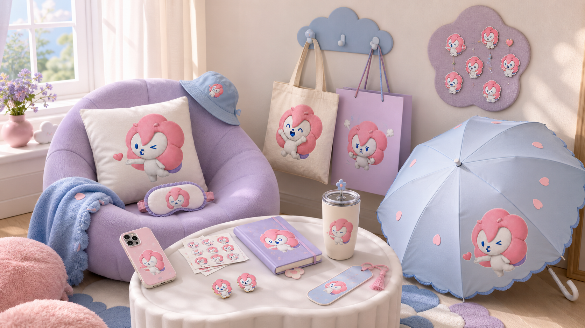
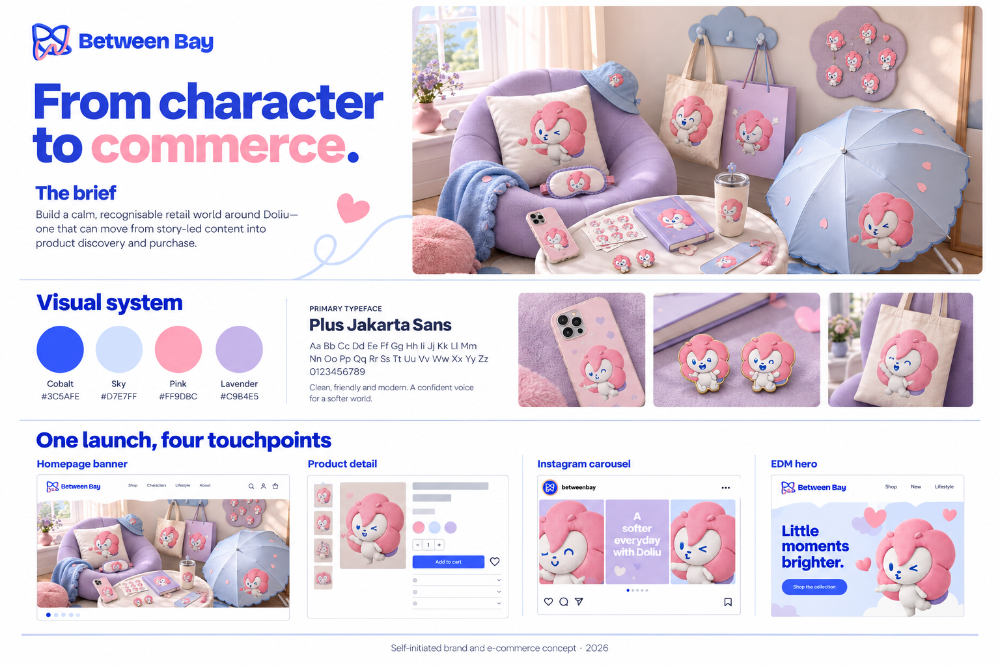

Hierarchy
One headline and one next step keep the campaign legible. The logo, copy and call to action are editable elements.
Independent concept · 2026 · Kelcy Han
A character-led retail identity, translated into product storytelling and a working storefront prototype.
Explore the storefront demo ↗
Build a recognisable retail world around Doliu, connecting an emotional character story to clear product discovery.
Intended audience: people drawn to playful everyday accessories and small gifts with a reassuring character story. This is a design hypothesis, not a research finding.
01 · One visual language
The overview, case study and storefront use the same type and colour specifications. Cobalt carries actions and headings; the softer colours support product imagery.
#3C5AFE#D7E7FF#FF9DBC#C9B4E5Aa Bb Cc Dd Ee Ff Gg · 0123456789
Large, short headlines; calm body copy; explicit product labels. Dark ink is used on pastel backgrounds for readability.
02 · Production study
This editable HTML/CSS study uses the existing concept image. The banner pairs copy with imagery; the social layout stacks them to preserve reading order. These are new portfolio adaptations, not previously delivered client assets.
Landscape web banner · 3:1 composition · text remains separate from imagery
Portrait social study · 4:5 composition · image first, message second
One headline and one next step keep the campaign legible. The logo, copy and call to action are editable elements.
The portrait crop favours the character and tote. The wide version gives the message its own panel instead of stretching the same layout.
Case information now comes before the shop demo. Typography and palette now match the overview. These are presentation revisions, not user-test results.
03 · Concept overview

Process & attribution
The project connects the Doliu character concept with a retail identity, merchandise ideas and product storytelling. The site documents an independent exploration.
Generative AI was used for merchandise and lifestyle mock-ups and the overview board. These images are visualisations, not photographs of manufactured products.
The storefront and these adaptation layouts use editable HTML/CSS with AI-assisted coding. No Shopify checkout integration, email campaign deployment or measured conversion improvement is claimed.
Next validation: check actual product specifications and production files before manufacture; test product discovery with users before launch.